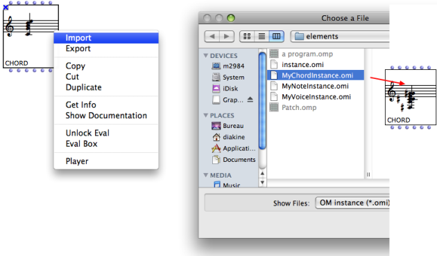
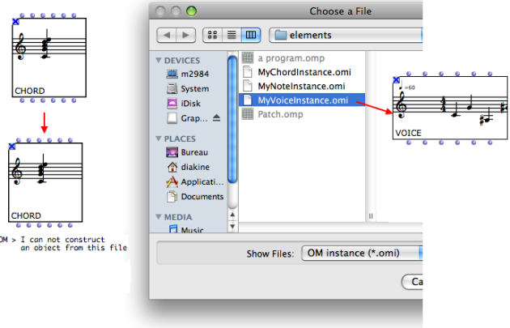

OpenMusic DocumentationHiérarchie de section : OM 6.6 User Manual > Visual Programming I > Boxes > Objects – Factory Boxes > Import/Export
OpenMusic DocumentationHiérarchie de section : OM 6.6 User Manual > Visual Programming I > Boxes > Objects – Factory Boxes > Import/Export
Navigation : page précédente | page suivante
Attention, votre navigateur ne supporte pas le javascript ou celui-ci à été désactivé. Certaines fonctionnalités de ce guide sont restreintes.
Importing/Exporting Factory Box Values
Instances Files
The current value of a factory box can be exported or imported as a file to or from any location in the computer. Exporting an instance is a means to preserve the musical result of a computation.
Both procedures take place in the patch editor, via a contextual menu. Instances are identified by the .omi extension – "i" for "instance".
Export Procedure
To export the instance from a factory box,
Ctrl/ right click on the box and select "Export".Choose an export location and file name on tyour hard-disk.
{kind=link}
Import Procedure
To import an instance in a factory box,
Ctrl/ right click on the box and select "Import".Choose a .omi file to import.

{kind=link}
Compatibility
Mind importing a suitable instance file in a given factory editor. In case of incopmpatible object, OM will display an error message and the box contents won't be modified.

External File Formats
Some objects (particularly, musical object) can be imported/exported from/to standard external formats (e.g. MIDI, MusicXML, etc.)
In this case, some additional options will be displayed in the Import and Export menus.
Importing/Exporting Score Objects
Références :
Instance
An actual object created at runtime, out of a given class. In OM, more specifically, an object created when evaluating a factory box. An instance can be saved as a global variable.
⤷
SHIFTclick on an outlet – especially the first outlet representing the self, the whole object – of a factory box to materialize an instance.Global variable
An instance of OM object that has been saved in order to be used in other programs. Global variables are visible from the
Librarywindow and stored as .omi files in theGlobalsfolder of the workspace.
Plan :
- OpenMusic Documentation
- OM 6.6 User Manual
- Introduction
- System Configuration and Installation
- Going Through an OM Session
- The OM Environment
- Visual Programming I
- Visual Programming II
- Basic Tools
- Score Objects
- Maquettes
- Sheet
- MIDI
- Audio
- SDIF
- Lisp Programming
- Errors and Problems
- OpenMusic QuickStart
Navigation : page précédente | page suivante
A propos...(c) Ircam - Centre Pompidou